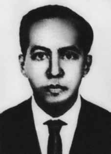

Antônio
Henrique
Pereira
Neto
CIRCUNSTÂNCIAS DA MORTE
Padre Antônio Henrique foi sequestrado na noite de maio de 1969 e torturado e morto na madrugada do dia 27 de maio de 1969 por um grupo do Comando de Caça aos Comunistas e por agentes da polícia civil de Pernambuco. Padre Antônio Henrique participou de duas reuniões com jovens e pais na noite do dia 26, a última reunião no largo do Parnamirim. Recusou reiteradamente a carona de seus alunos e foi visto a última vez por uma aluna sua, Lavínia Lins, na companhia de três homens em uma rural verde e branca. No dia seguinte, às 6 horas da manhã, seu corpo foi encontrado com sinais de tortura e tiros na cabeça, na grama, entre o meio fio e uma cerca de arame farpado em uma avenida da Cidade Universitária, em Recife. O modus operandi, as circunstâncias, as lesões e a natureza do crime indicavam ter sofrido torturas e ter sido executado por mais de um agente. De acordo com documentos do Centro de Informações da Marinha (Cenimar), relatos de seus familiares e colegas de trabalho, padre Antônio era alvo de intenso monitoramento, inclusive por escutas telefônicas. Além disso, em depoimento à Comissão Estadual da Memória e Verdade Dom Hélder Câmara, o Irmão Orlando Lima da Cunha relatou que Padre Henrique havia recebido uma carta com ameaças de morte, assinada pelo Comando de Caça aos Comunistas (CCC). Dias antes de sua morte, o CCC metralhou o Juvenato Dom Vidal, local onde o padre trabalhava. Na ação, o estudante Cândido Pinto foi baleado e ficou paraplégico. À época, o governador do estado de Pernambuco, Nilo Coelho, instaurou uma comissão judiciária de inquérito, presidida pelo juiz Aloísio Xavier. A comissão de inquérito terminou os trabalhos em 24 dias e concluiu com a incriminação de jovens civis, a despeito da suspeita da família e do depoimento de um detetive envolvido nas investigações, ambos acusando agentes policiais. Além disso, a mãe suspeitava que alguém havia colocado Antônio Henrique em situação de perigo, pois um jovem que frequentava a casa do padre a advertiu de que se procurasse saber quem matara seu filho, seria baleada pelas costas. Em dezembro de 1970, o Ministério Público de Pernambuco apresentou as alegações finais, nas quais concluiu que se tratou de um crime comum, mantendo a acusação realizada pela Comissão Judiciária de Inquérito, contra Rogério Matos do Nascimento – pronunciável – e Pedro Jorge Bezerra Leite, Jorge Caldas Tavares e Michel Maurice Och – impronunciáveis por falta de provas. Em 1988, para evitar a prescrição do caso, o Ministério Público ofereceu inédita denúncia-crime contra Bartolomeu Gibson (à época diretor do Departamento de Investigações da Secretaria de Estado e Segurança Pública de Pernambuco – SSP/PE), Henrique Pereira Filho e Rível Gomes Rocha. Contudo, o Tribunal de Justiça de PE decidiu pelo arquivamento da ação penal contra os acusados. Alguns aspectos da execução e das torturas permanecem não esclarecidos. Contudo, as investigações realizadas pela CEMDP, Comissão Estadual da Memória e Verdade Dom Hélder Câmara e Comissão Nacional da Verdade (CNV) encontraram indícios que permitem desconstruir a versão oficial de crime comum e indicar os agentes responsáveis pela execução. Os principais indícios advêm de um documento bastante esclarecedor: o informe confidencial no 685/70 do Serviço Nacional de Informações (SNI), de 1970. Nesse documento, consta que o promotor de justiça Dr. José Ivens Peixoto procurou o general Carlos Alberto da Fontoura, do SNI, para informar que o Ministério Público Federal de Pernambuco havia redigido as alegações finais para o caso, nas quais afirmava que a execução de padre Antônio teria sido realizada por um grupo de jovens de extrema direita em coautoria com a polícia civil de Pernambuco, tendo inclusive sido usado carro pertencente à polícia civil no sequestro do padre. Nas alegações, há menção direta aos nomes de Rível Rocha, Humberto Serrano de Souza, Rogério Matos, Jerônimo Duarte Rodrigues Neto (menor de idade à época, parente de Bartolomeu e próximo a padre Henrique) e José Bartolomeu Gibson como responsáveis pelo crime. Por se preocupar com as “imprevisíveis consequências maléficas” da repercussão da publicação das alegações finais, o promotor considerou oportuno avisar o SNI antes de apresentá-las. O SNI encaminhou esse documento ao Ministério da Justiça e, de posse dessa informação, o Ministro da Justiça Alfredo Buzaid, por meio da portaria no 114-BC, de 6 de agosto de 1970, designou um consultor jurídico para investigar o assunto. O consultor jurídico Leonardo Greco encaminhou o Parecer Confidencial no CJ 144/70 em 26 de agosto de 1970 ao Ministério da Justiça. Nesse parecer, informou que os depoimentos de Risoleta Cavalcanti, do tenente-coronel reformado Agenor Rodrigues da Silva e do Irmão Orlando Cunha Lima, além das provas levantadas pelo Ministério Público, indicavam que se tratava de um crime político, de responsabilidade dos autores acima mencionados, além de Rogério Matos, inocentando os jovens acusados nas conclusões da Comissão Judiciária de Inquérito. No parecer consta ainda que o consultor, em referência a uma conversa com o promotor público, obteve de “Sua Excelência o compromisso de que não concluirá o seu trabalho antes de receber nossas instruções expressas de como proceder”. Esses documentos revelam tanto a motivação política do crime quanto o fato de que as autoridades militares de Pernambuco e da esfera federal sabiam da autoria da execução e agiram para ocultar e interferir no processo, por meio do Ministério da Justiça. Em parecer confidencial enviado àquele ministério, consta que participaram do crime os investigadores da polícia civil Rível Rocha, Humberto Serrano de Souza, José Bartolomeu Gibson, Jerônimo Gibson e Rogério Matos. Os documentos produzidos pelo SNI, Ministério da Justiça e Cenimar desconstroem a versão oficial e comprovam a execução por motivação política perpetrada por integrantes do CCC e agentes policiais do estado de Pernambuco. Além disso, observase a subserviência do Ministério Público Estadual ao Poder Executivo Federal.
Father Antônio Henrique was kidnapped on the night of May 1969 and tortured and killed in the early hours of May 27, 1969 by a group from the Communist Hunting Command and by agents from the civil police of Pernambuco. Father Antônio Henrique participated in two meetings with young people and parents on the night of the 26th, the last meeting in Largo do Parnamirim. He repeatedly refused a ride from his students and was last seen by one of his students, Lavínia Lins, in the company of three men in a green and white countryside. The following day, at 6 am, his body was found with signs of torture and gunshots to the head, on the grass, between the curb and a barbed wire fence on an avenue in Cidade Universitária, in Recife. The modus operandi, the circumstances, the injuries and the nature of the crime indicated that he had suffered torture and had been carried out by more than one agent. According to documents from the Navy Information Center (Cenimar), reports from his family and co-workers, Father Antônio was the target of intense monitoring, including telephone tapping. Furthermore, in testimony to the State Commission for Memory and Truth Dom Hélder Câmara, Brother Orlando Lima da Cunha reported that Father Henrique had received a letter with death threats, signed by the Communist Hunt Command (CCC). Days before his death, the CCC machine-gunned the Juvenato Dom Vidal, the place where the priest worked. In the action, student Cândido Pinto was shot and became paraplegic. At the time, the governor of the state of Pernambuco, Nilo Coelho, established a judicial commission of inquiry, chaired by judge Aloísio Xavier. The commission of inquiry completed its work in 24 days and concluded with the incrimination of young civilians, despite the family's suspicion and the testimony of a detective involved in the investigations, both accusing police agents. Furthermore, the mother suspected that someone had put Antônio Henrique in a dangerous situation, as a young man who frequented the priest's house warned her that if she tried to find out who had killed her son, she would be shot in the back. In December 1970, the Public Ministry of Pernambuco presented the final arguments, in which it concluded that it was a common crime, maintaining the accusation made by the Judicial Commission of Inquiry, against Rogério Matos do Nascimento – pronounceable – and Pedro Jorge Bezerra Leite, Jorge Caldas Tavares and Michel Maurice Och – unpronounceable due to lack of evidence. In 1988, to avoid the statute of limitations for the case, the Public Prosecutor's Office filed an unprecedented criminal complaint against Bartolomeu Gibson (at the time director of the Investigations Department of the Secretariat of State and Public Security of Pernambuco – SSP/PE), Henrique Pereira Filho and Rível Gomes Rocha. However, the PE Court of Justice decided to close the criminal case against the accused. Some aspects of the execution and torture remain unclear. However, investigations carried out by CEMDP, the State Commission for Memory and Truth Dom Hélder Câmara and the National Truth Commission (CNV) found evidence that allowed us to deconstruct the official version of a common crime and indicate the agents responsible for the execution. The main evidence comes from a very enlightening document: the confidential report no. 685/70 of the National Information Service (SNI), from 1970. In this document, it appears that the prosecutor Dr. José Ivens Peixoto sought out General Carlos Alberto da Fontoura, from the SNI, to inform him that the Federal Public Ministry of Pernambuco had written the final arguments for the case, in which he stated that the execution of Father Antônio had been carried out by a group of far-right young people in co-authorship with the civil police of Pernambuco, and a car belonging to the civil police was even used in the kidnapping of the priest. In the allegations, there is direct mention of the names of Rível Rocha, Humberto Serrano de Souza, Rogério Matos, Jerônimo Duarte Rodrigues Neto (a minor at the time, related to Bartolomeu and close to Father Henrique) and José Bartolomeu Gibson as those responsible for the crime. Because he was concerned about the “unpredictable harmful consequences” of the repercussions of publishing the final arguments, the prosecutor considered it opportune to warn the SNI before presenting them. The SNI forwarded this document to the Ministry of Justice and, in possession of this information, the Minister of Justice Alfredo Buzaid, through ordinance no. 114-BC, of August 6, 1970, appointed a legal consultant to investigate the matter. Legal consultant Leonardo Greco forwarded the Confidential Opinion in CJ 144/70 on August 26, 1970 to the Ministry of Justice. In this opinion, he reported that the testimonies of Risoleta Cavalcanti, retired lieutenant colonel Agenor Rodrigues da Silva and Brother Orlando Cunha Lima, in addition to the evidence collected by the Public Prosecutor's Office, indicated that it was a political crime, the responsibility of the authors mentioned above, in addition to Rogério Matos, clearing the young people accused in the conclusions of the Judicial Commission of Inquiry. The opinion also states that the consultant, in reference to a conversation with the public prosecutor, obtained from “His Excellency the commitment that he will not complete his work before receiving our express instructions on how to proceed”. These documents reveal both the political motivation of the crime and the fact that the military authorities in Pernambuco and at the federal level knew who was responsible for the execution and acted to hide and interfere in the process, through the Ministry of Justice. In a confidential opinion sent to that ministry, it is stated that civil police investigators Rível Rocha, Humberto Serrano de Souza, José Bartolomeu Gibson, Jerônimo Gibson and Rogério Matos participated in the crime. The documents produced by the SNI, Ministry of Justice and Cenimar deconstruct the official version and prove the politically motivated execution perpetrated by members of the CCC and police agents from the state of Pernambuco. Furthermore, the subservience of the State Public Ministry to the Federal Executive Branch is observed.
El padre Antônio Henrique fue secuestrado la noche de mayo de 1969 y torturado y asesinado en la madrugada del 27 de mayo de 1969 por un grupo del Comando Comunista de Caza y por agentes de la policía civil de Pernambuco. El padre Antônio Henrique participó en dos encuentros con jóvenes y padres la noche del día 26, el último encuentro en Largo do Parnamirim. Se negó repetidamente a que sus alumnos lo llevaran y fue visto por última vez por uno de sus alumnos, Lavínia Lins, en compañía de tres hombres en un campo verde y blanco. Al día siguiente, a las 6 de la mañana, su cuerpo fue encontrado con signos de tortura y disparos en la cabeza, sobre el césped, entre la acera y una cerca de alambre de púas, en una avenida de la Ciudad Universitaria, en Recife. El modus operandi, las circunstancias, las lesiones y la naturaleza del crimen indicaban que había sufrido torturas y había sido ejecutado por más de un agente. Según documentos del Centro de Información de la Marina (Cenimar), informes de sus familiares y compañeros de trabajo, el padre Antônio fue objeto de intensos seguimientos, incluidas escuchas telefónicas. Además, en testimonio ante la Comisión Estatal para la Memoria y la Verdad, Dom Hélder Câmara, el hermano Orlando Lima da Cunha informó que el padre Henrique había recibido una carta con amenazas de muerte, firmada por el Comando de Caza Comunista (CCC). Días antes de su muerte, la CCC ametralló el Juvenato Dom Vidal, lugar donde trabajaba el sacerdote. En la acción, el estudiante Cândido Pinto recibió un disparo y quedó parapléjico. En ese momento, el gobernador del estado de Pernambuco, Nilo Coelho, creó una comisión judicial de investigación, presidida por el juez Aloísio Xavier. La comisión de investigación completó su trabajo en 24 días y concluyó con la incriminación de jóvenes civiles, a pesar de las sospechas de la familia y del testimonio de un detective involucrado en las investigaciones, ambos acusando a agentes policiales. Además, la madre sospechaba que alguien había puesto a Antônio Henrique en una situación peligrosa, ya que un joven que frecuentaba la casa del cura le advirtió que si intentaba descubrir quién había matado a su hijo, le dispararían por la espalda. En diciembre de 1970, el Ministerio Público de Pernambuco presentó los alegatos finales, en los que concluyó que se trataba de un delito común, manteniendo la acusación formulada por la Comisión Judicial de Encuesta, contra Rogério Matos do Nascimento – pronunciable – y Pedro Jorge Bezerra Leite, Jorge Caldas Tavares y Michel Maurice Och – impronunciables por falta de pruebas. En 1988, para evitar la prescripción del caso, el Ministerio Público presentó una denuncia penal sin precedentes contra Bartolomeu Gibson (en ese momento director del Departamento de Investigaciones de la Secretaría de Estado y Seguridad Pública de Pernambuco – SSP/PE), Henrique Pereira Filho y Rível Gomes Rocha. Sin embargo, el Tribunal de Justicia de PE decidió archivar la causa penal contra el acusado. Algunos aspectos de la ejecución y la tortura siguen sin estar claros. Sin embargo, las investigaciones realizadas por el CEMDP, la Comisión Estatal para la Memoria y la Verdad Dom Hélder Câmara y la Comisión Nacional de la Verdad (CNV) encontraron evidencias que permitieron deconstruir la versión oficial de un crimen común e indicar los agentes responsables de la ejecución. La principal evidencia proviene de un documento muy esclarecedor: el informe confidencial núm. 685/70 del Servicio Nacional de Información (SNI), de 1970. En este documento, consta que el fiscal Dr. José Ivens Peixoto buscó al general Carlos Alberto da Fontoura, del SNI, para informarle que el Ministerio Público Federal de Pernambuco había redactado los alegatos finales del caso, en los que afirmaba que la ejecución del padre Antônio había sido realizada por un grupo de jóvenes de extrema derecha en coautoría con la policía civil de Pernambuco, e incluso un vehículo de la policía civil fue utilizado en el secuestro del sacerdote. En las denuncias se menciona directamente los nombres de Rível Rocha, Humberto Serrano de Souza, Rogério Matos, Jerônimo Duarte Rodrigues Neto (entonces menor de edad, pariente de Bartolomeu y cercano al padre Henrique) y José Bartolomeu Gibson como responsables del crimen. Preocupado por las “consecuencias dañinas impredecibles” de las repercusiones de la publicación de los alegatos finales, el fiscal consideró oportuno advertir al SNI antes de presentarlos. El SNI remitió este documento al Ministerio de Justicia y, en posesión de esta información, al Ministro de Justicia Alfredo Buzaid, mediante ordenanza no. 114-BC, de 6 de agosto de 1970, nombró un asesor jurídico para investigar el asunto. El asesor jurídico Leonardo Greco remitió el dictamen confidencial en CJ 144/70 el 26 de agosto de 1970 al Ministerio de Justicia. En este dictamen, informó que los testimonios de Risoleta Cavalcanti, el teniente coronel retirado Agenor Rodrigues da Silva y el hermano Orlando Cunha Lima, además de las pruebas recabadas por el Ministerio Público, indicaron que se trató de un delito político, responsabilidad de los autores antes mencionados, además de Rogério Matos, absolviendo a los jóvenes imputados en las conclusiones de la Comisión Judicial de Investigación. El dictamen también señala que el consultor, en referencia a una conversación con el fiscal, obtuvo de “Su Excelencia el compromiso de que no concluirá su trabajo antes de recibir nuestras instrucciones expresas sobre cómo proceder”. Estos documentos revelan tanto la motivación política del crimen como el hecho de que las autoridades militares en Pernambuco y a nivel federal sabían quién era el responsable de la ejecución y actuaron para ocultar e interferir en el proceso, a través del Ministerio de Justicia. En un dictamen confidencial enviado a ese ministerio, se afirma que en el crimen participaron los investigadores de la policía civil Rível Rocha, Humberto Serrano de Souza, José Bartolomeu Gibson, Jerônimo Gibson y Rogério Matos. Los documentos presentados por el SNI, el Ministerio de Justicia y Cenimar deconstruyen la versión oficial y prueban la ejecución por motivos políticos perpetrada por miembros de la CCC y agentes de policía del estado de Pernambuco. Además, se observa la subordinación del Ministerio Público Estatal al Poder Ejecutivo Federal.